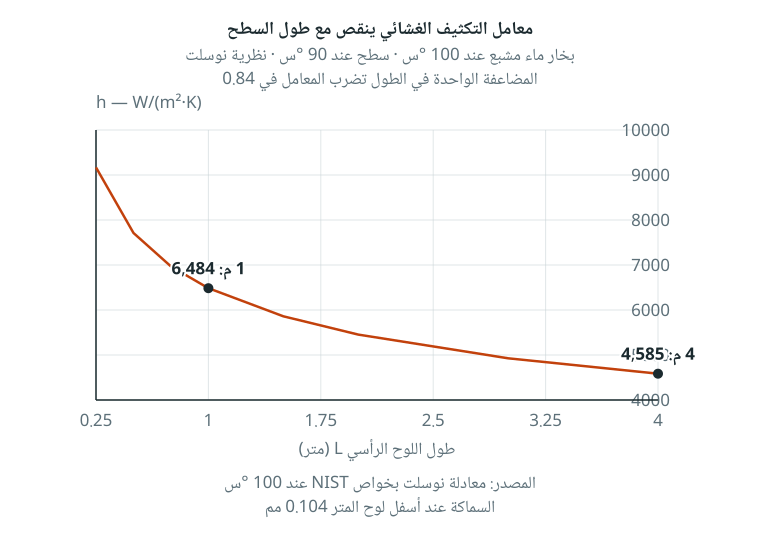

التكثيف الغشائي على سطح رأسي: معامل الانتقال ينقص مع الطول ولا يثبت
Film condensation on a vertical surface (Nusselt theory)
بخار ماء مشبع عند 100 °س على لوح رأسي عند 90 °س يعطي معامل تكثيف 6,484 واط/(م²·ك) عند طول متر، وينقص إلى 5,453 عند مترين و4,585 عند أربعة أمتار: القيمة تتبع الجذر الرابع للطول، فلا تثبت ولا تُعمَّم بلا ذكر ظروفها.
مكثّف في محطة بخار، أو ملف تسخين يغذّيه بخار مشبع: البخار يلامس سطحًا معدنيًا أبرد من درجة تشبّعه، فيتحول سائلًا ويطرح حرارة التبخير الكامنة على السطح. السؤال العملي المباشر: كم واطًا يعبر المتر المربع لكل كلفن فرق حرارة، أي ما قيمة معامل انتقال الحرارة h لهذا التكثيف؟
الجواب ليس رقمًا واحدًا يُحفظ. خذ لوحًا رأسيًا نظيفًا طوله مترًا واحدًا، بخار ماء مشبع عند 100 °س، وسطحه عند 90 °س (فرق 10 كلفن). المتكثّف لا يسقط فورًا: يبقى غشاءً سائلًا متصلًا يغطي المعدن ويسيل بالجاذبية، فتعبر الحرارة هذا الغشاء توصيلًا، ويصير الغشاء نفسه هو المقاومة الحاكمة. سمكه عند أسفل اللوح 0.104 مم، ومعامل انتقال الحرارة المحسوب بنظرية نوسلت 6,484 واط/(م²·ك).
مدّد اللوح إلى مترين: ينقص المعامل إلى 5,453، وإلى أربعة أمتار: 4,585. كل مضاعفة للطول تضرب القيمة في 0.84، وكل مضاعفة لفرق الحرارة تفعل الشيء نفسه: عند 30 كلفن يصير المعامل 4,927. لذلك لا يصحّ طلب «معامل تكثيف البخار» كأنه خاصية مادة؛ هو خاصية هندسة السطح وظروفه، ويُذكر معه الطول وفرق الحرارة دائمًا.
والأثر الهندسي أن الاستطاعة لا تنمو خطيًّا مع المساحة. عند 6,484 واط/(م²·ك) وفرق 10 كلفن يعبر 64.8 كيلوواط من كل متر مربع، أي مكثَّف بمعدل 28.4 غرام في الثانية على المتر المربع. ورفع الفرق إلى 20 كلفن يرفع التدفق إلى 109 كيلوواط/م² لا إلى الضعف، لأن المعامل يهبط إلى 5,453 في الوقت نفسه: الاستطاعة تتناسب مع فرق الحرارة أُسًّا 0.75، لا أُسًّا واحدًا.
كيف تعمل الظاهرة؟
الحرارة الكامنة تُطرح عند السطح البيني بين البخار والغشاء السائل لا عند المعدن، فتمرّ أولًا في السائل ثم في الجدار. الغشاء يزداد سماكة باتجاه الأسفل لأن ما يتكثّف في الأعلى ينساب وينضم إلى ما تحته، فيصير كل مقطع سفلي أعلى مقاومة من الذي فوقه. توازن القوى على عنصر الغشاء يقابل بين مركّبة الجاذبية على الكتلة السائلة وإجهاد القصّ اللزج عند الجدار؛ حلّ هذا التوازن مع تدفق حراري ثابت يعطي سماكة تتناسب مع الجذر الرابع لمسافة الانسياب من القمة، δ ∝ L^0.25، وبما أن h = k/δ فإن h ∝ L^−0.25. ولهذا تتساوى قيمتان تبدوان مختلفتين: 0.104 مم سماكةً و6,484 واط/(م²·ك) معاملًا هما الشيء نفسه، لأن قسمة 0.677 على سماكة الغشاء بالمتر تعيد المعامل ذاته.
العلاقة بالأرقام
معادلة نوسلت للغشاء الرقيعي الصفحي على لوح رأسي: h = 0.943 [ g·ρl·(ρl − ρv)·k³·hfg / ( μ·L·ΔT ) ]^0.25. تُدخل خواص الماء المشبع عند 100 °س: ρl = 958.3 kg/m³، ρv = 0.598 kg/m³، k = 0.677 W/(m·K)، μ = 282 µPa·s، hfg = 2,257 kJ/kg. النتيجة مع L = 1 m وΔT = 10 K هي 6,484 W/(m²·K). التدفق الحراري q = h·ΔT = 64.8 kW/m²، والفيض الكتلي للمكثَّف m″ = q/hfg′ = 28.4 g/(m²·s) حيث hfg′ = hfg + 0.68·cp·ΔT. الأُسّ سالب 0.25 للطول ولفرق الحرارة معًا، فمضاعفة أحدهما تضرب h في 0.84: الطول مترين يعطي 5,453، وفرق 20 كلفن عند المتر يعطي 5,453 أيضًا، وفرق 30 كلفن يعطي 4,927. ومن ثمّ q ∝ ΔT^0.75: مضاعفة الفرق ترفع التدفق إلى 109 kW/m². تحقّق داخلي: δ = k/h = 0.104 mm، وعدد رينولدز للغشاء عند أسفل اللوح Re = 4·m″·L/μ = 402.
مفاهيم متقاربة
أشيع خلط: مقارنة مكثّفين بـ«معامل التكثيف» وحده بلا طول ولا فرق حرارة، فيُنسب الفارق إلى المعدن أو إلى نظافة السطح. الفارق الحقيقي أن هذا المعامل ليس ثابتًا كمعامل الحمل القسري أحادي الطور: هنا h يعتمد على ΔT نفسه فينقص إلى 4,927 بين 10 و30 كلفن، وينقص بالطول بالطريقة نفسها. وخلط ثانٍ: التكثيف الغشائي ليس التكثيف القطري؛ القطرات المنفصلة تمنح معاملًا أعلى بنحو خمسة أضعاف (قريب من 32,422 واط/(م²·ك)) لأنها لا تُقيم طبقة ساكنة مقاومة، لكنها هشّة عمليًا وتتحول غشائيًّا بالشوائب والتآكل، وأرقام المكثّفات الصناعية غشائية. وخلط ثالث وأخطر: افتراض أن تحسين h يفيد دائمًا؛ في مبادل بخار/هواء تكون مقاومة الهواء أكبر بأضعاف من مقاومة سطح التكثيف، فيبقى معامل الكل 9.98 واط/(م²·ك) مهما ضوعف الجانب البخاري.
حدود التطبيق
الافتراضات: غشاء رقيعي أملس، بخار ساكن بلا إجهاد قصّ، خواص ثابتة تُقيَّم عند درجة التشبّع، وإهمال الموجات والتلويث. هذه لا تصحّ على كل طول. عدد رينولدز المحسوب 402 يقع فوق حدّ الغشاء الأملس (نحو 30) ودون حدّ الاضطراب (نحو 1800): أي أن الحالة الواقعية بين الأملس والموجي، وقيمة نوسلت حدّ أدنى تقريبي لأن الموجات ترفع الانتقال فوقه. بعد 1800 يبدأ الاضطراب فيرتفع h مع الطول بدل أن ينقص، ولا تصلح المعادلة. كذلك تُقيَّم الخواص عند 100 °س لا عند متوسط الغشاء (95 °س)، وتصحيح hfg′ أثره ضئيل هنا لكنه يكبر مع فرق الحرارة. وأخيرًا: الهواء غير المتكثّف في البخار والتلويث والزيت يضيفون مقاومة لا تراها المعادلة وقد تخفض المعامل الفعلي بأضعاف؛ فالأرقام أعلاه لسطح نظيف وبخار نقي عند ضغط جوي.

| الكمية | القيمة | المصدر |
|---|---|---|
| كثافة الماء السائل المشبع عند 100 °س | 958.3 kg/m³ | [1] |
| كثافة بخار الماء المشبع عند 100 °س وضغط جوي | 0.598 kg/m³ | [2] |
| التوصيل الحراري للماء السائل عند 100 °س | 0.677 W/(m·K) | [1] |
| اللزوجة الديناميكية للماء السائل عند 100 °س | 282 µPa·s | [1] |
| حرارة التبخير الكامنة للماء عند 100 °س | 2,257 kJ/kg | [2] |
| معامل التكثيف الغشائي المحسوب عند L = 1 m وΔT = 10 K | 6,484 W/(m²·K) | [1] |
| المعامل نفسه عند L = 2 m وΔT = 10 K | 5,453 W/(m²·K) | [1] |
| المعامل نفسه عند L = 4 m وΔT = 10 K | 4,585 W/(m²·K) | [1] |
| المعامل نفسه عند L = 1 m وΔT = 30 K | 4,927 W/(m²·K) | [1] |
| سماكة غشاء المكثَّف عند أسفل اللوح (L = 1 m) | 0.104 mm | [1] |
| التدفق الحراري عند ΔT = 10 K وL = 1 m | 64.8 kW/m² | [1] |
| فيض كتلة المكثَّف عند ΔT = 10 K وL = 1 m | 28.4 g/(m²·s) | [1] |
| التدفق الحراري عند مضاعفة الفرق إلى ΔT = 20 K | 109 kW/m² | [1] |
| عدد رينولدز لغشاء المكثَّف عند أسفل اللوح (L = 1 m) | 402 — | [1] |
| تقدير معامل التكثيف القطري (خمسة أضعاف الغشائي) | 32,422 W/(m²·K) | [1] |
| معامل الكل لجدار فولاذي 2 mm بين بخار مكثِّف وهواء بحمل 10 W/(m²·K) | 9.98 W/(m²·K) | [1] |
المصادر
- 1 Thermophysical Properties of Fluid Systems (Water, saturated liquid and vapor) — NIST Chemistry WebBook. webbook.nist.gov/chemistry/fluid/ · اطُّلع عليه 2026-11-24
- 2 Properties of Saturated Steam - SI Units — The Engineering ToolBox. www.engineeringtoolbox.com/saturated-steam-properties-d_101.html · اطُّلع عليه 2026-11-24
راجعه: عبدالله الهويدي — مراجعة في تطبيق انفراد · 2026-11-24 · آخر تحديث 2026-11-24
رجوع إلى المقالات